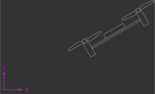
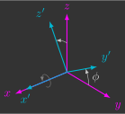
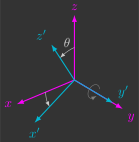

Sistema de coordenadas
No controle de drones, o uso de sistemas de coordenadas é fundamental para descrever posições e orientações relativas. Alguns exemplos comuns são: a posição do drone em relação ao solo, a orientação da câmera em relação ao drone e a velocidade do drone em relação ao vento.
A escolha do sistema de coordenadas adequado torna muitos cálculos mais simples. Por exemplo, forças e torques aerodinâmicos são mais naturalmente descritos em um sistema de coordenadas móvel (fixo no drone), enquanto a aceleração da gravidade é melhor representada em um sistema de coordenadas inercial (fixo na Terra).
Matriz de rotação
Quando trabalhamos com diferentes sistemas de coordenadas, precisamos de uma forma matemática para descrever a orientação relativa entre eles. Essa função é cumprida pelas matrizes de rotação, que permitem representar rotações tanto no plano (2D) quanto no espaço tridimensional (3D).
2D
Ao descrever a posição de um drone, precisamos definir uma referência. Um método geral é utilizar um sistema de coordenadas inercial \({\color{magenta}yz}\) (1).
- Fixo na Terra, que não acelera nem rotaciona.

Já para descrever a atitude (orientação) do drone, apenas esse sistema não é suficiente. É necessário introduzir também um sistema de coordenadas móvel \({\color{cyan}y'z'}\) (1).
- Fixo no drone, que acelera e rotaciona com ele.

A atitude do drone é dada, portanto, pela orientação relativa do sistema móvel \({\color{cyan}y'z'}\) em relação ao sistema inercial \({\color{magenta}yz}\). Essa orientação pode ser representada matematicamente por uma matriz \(2 \times 2\) chamada de matrix de rotação \(R\):
Apesar de possuir quatro elementos, essa matriz pode ser descrita em função de um único parâmetro: o ângulo de rotação \(\phi\):
Exercício 1
Considere que o sistema de coordenadas móvel \({\color{cyan}y'z'}\) está rotacionado de um ângulo \(\phi\) em relação ao sistema de coordenadas inercial \({\color{magenta}yz}\).

a) Escreva a matriz de rotação em função do ângulo \(\phi\).
b) Calcule \(R(\phi)\) para \(\phi = \frac{\pi}{2} \, \text{rad}\) e interprete o resultado.
O resultado faz sentido: ao rotacionar \(90^{\circ}\), o eixo \({\color{cyan}y'}\) passa a coincidir com \({\color{magenta}z}\), enquanto o eixo \({\color{cyan}z'}\) fica no sentido oposto de \({\color{magenta}y}\).
c) Determine o ângulo \(\phi\) correspondente à matriz
\(R (\phi)= \begin{bmatrix} \frac{\sqrt{2}}{2} & \frac{\sqrt{2}}{2} \\ -\frac{\sqrt{2}}{2} & \frac{\sqrt{2}}{2} \end{bmatrix}\).
3D
Assim como no plano, no espaço a atitude do drone também é dada pela atitude relativa do sistema de coordenadas móvel \({\color{cyan}x'y'z'}\) em relação ao sistema de coordenadas inercial \({\color{magenta}xyz}\).
No entanto, como agora estamos lidando com três dimensões, a matriz de rotação \(R\) passa a possuir dimensão \(3 \times 3\):
De acordo com Leonhard Euler, qualquer atitude no espaço pode ser descrita através de três rotações sucessivas em torno de eixos pré-definidos e mutuamente ortogonais(1). Dessa forma, os nove elementos da matriz de rotação podem ser expressos em função de três parâmetros: os ângulos de Euler \(\phi\), \(\theta\) e \(\psi\):
- Formam um ângulo de \(90^{\circ}\) entre si.
Exercício 2
Considere que o sistema de coordenadas móvel \({\color{cyan}x'y'z'}\) está rotacionado de um ângulo \(\phi\) em relação ao sistema de coordenadas inercial \({\color{magenta}xyz}\) e em torno do eixo \({\color{magenta}x}\).

a) Escreva a matriz de rotação em função do ângulo \(\phi\).
b) Calcule \(R_x(\phi)\) para \(\phi=\pi \, \text{rad}\) e interprete o resultado.
O resultado faz sentido: uma rotação de \(180^\circ\) em torno de \({\color{magenta}x}\) inverte os eixos \({\color{magenta}y}\) e \({\color{magenta}z}\), de modo que \({\color{cyan}y'}\) e \({\color{cyan}z'}\) ficam em sentidos opostos a \({\color{magenta}y}\) e \({\color{magenta}z}\), enquanto \({\color{cyan}x'}\) permance alinhado com \({\color{magenta}x}\).
Exercício 3
Considere que o sistema de coordenadas móvel \({\color{cyan}x'y'z'}\) está rotacionado de um ângulo \(\theta\) em relação ao sistema de coordenadas inercial \({\color{magenta}xyz}\) e em torno do eixo \({\color{magenta}y}\).

a) Escreva a matriz de rotação em função do ângulo \(\theta\).
b) Calcule \(R_y(\theta)\) para \(\theta=\tfrac{\pi}{2} \, \text{rad}\) e interprete o resultado.
O resultado faz sentido: ao rotacionar \(90^\circ\) em torno de \({\color{magenta}y}\), o eixo \({\color{cyan}x'}\) passa a apontar para o sentido oposto de \({\color{magenta}z}\) e o eixo \({\color{cyan}z'}\) passa a coincidir com \({\color{magenta}x}\), enquanto o eixo \({\color{cyan}y'}\) permance alinhado com \({\color{magenta}y}\).
Exercício 4
Considere que o sistema de coordenadas móvel \({\color{cyan}x'y'z'}\) está rotacionado de um ângulo \(\psi\) em relação ao sistema de coordenadas inercial \({\color{magenta}xyz}\) e em torno do eixo \({\color{magenta}z}\).

a) Escreva a matriz de rotação em função do ângulo \(\psi\).
b) Calcule \(R_z(\psi)\) para \(\psi=2\pi \, \text{rad}\) e interprete o resultado.
O resultado faz sentido: uma rotação completa de \(360^\circ\) em torno de \({\color{magenta}z}\) devolve \({\color{cyan}x'y'z'}\) exatamente a \({\color{magenta}xyz}\), ou seja, todos os eixos voltam a coincidir.
Propriedades
Matrizes de rotação possuem algumas propriedades fundamentais:
- Cada linha e cada coluna tem norma unitária (comprimento igual a 1).
- Linhas e colunas são ortogonais entre si (o produto escalar entre elas é zero).
- São matrizes ortonormais (sua inversa é igual à transposta), isto é, \(R^{-1} = R^T\).
- Possuem determinante unitário, isto é, \(\det (R) = 1\).
Exercício 5
Considere a matriz de rotação \(R\) que relaciona o sistema de coordenadas móvel \({\color{cyan}x'y'z'}\) com o sistema de coordenadas inercial \({\color{magenta}xyz}\):
Calcule a matriz de rotação inversa \(R^{-1}\), isto é, que relaciona o sistema inercial \({\color{magenta}xyz}\) com o sistema móvel \({\color{cyan}x'y'z'}\).
Resposta
Ângulos de Euler
Os ângulos de Euler são um conjunto de três rotações sucessivas em torno de eixos distintos, que permitem levar o sistema de coordenadas inercial \({\color{magenta}xyz}\) até o sistema de coordenadas móvel \({\color{cyan}x'y'z'}\).
De acordo com a convenção adotada aqui, usamos:
- \(\psi\): rotação em torno do eixo \({\color{magenta}z'}\) (yaw - guinagem)
- \(\theta\): rotação em torno do eixo \({\color{magenta}y'}\) (pitch - inclinação)
- \(\phi\): rotação em torno do eixo \({\color{magenta}x'}\) (roll - rolagem)
A matriz de rotação total é obtida pela composição das três matrizes individuais.
Note
Observe que a primeira rotação aplicada, \(R_z(\psi)\), aparece mais à direita, enquanto a última rotação, \(R_x(\phi)\), aparece mais à esquerda. Isso ocorre porque a multiplicação de matrizes segue a ordem inversa da aplicação das transformações.
Exercício 6
Determine a matriz de rotação total \(R(\phi,\theta,\psi)\) que relaciona o sistema de coordenadas móvel \({\color{cyan}x'y'z'}\) com o sistema de coordenadas inercial \({\color{magenta}xyz}\) em função dos ângulos de Euler \(\phi\), \(\theta\) e \(\psi\).
Dica: utilize o Symbolic Math Toolbox do MATLAB.
Resposta
Singularidades
Singularidades são pontos nos quais uma variável matemática torna-se indefinida. No caso dos ângulos de Euler, é uma orientação na qual há mais de uma única sequência de rotações possíveis.
Quando a segunda rotação é igual a \(\theta = \frac{\pi}{2}\) rad, a direção dos eixos da primeira (\({\color{cyan}z'}\)) e terceira (\({\color{cyan}x'}\)) rotação coincidem, tornando-se impossível discernir os valores de \(\psi\) e \(\phi\).
Não há acordo sobre a notação (sequência de rotações) utilizada pelos ângulos de Euler. Existe um total de 12 combinações, pois a rotação seguinte deve sempre ocorrer em um eixo distinto da anterior, conforme a tabela abaixo:
| Notação | Eixo da 1ª rotação | Eixo da 2ª rotação | Eixo da 3ª rotação |
|---|---|---|---|
| \( x\!-\!y\!-\!x \) | \( x' \) | \( y' \) | \( x' \) |
| \( x\!-\!y\!-\!z \) | \( z' \) | ||
| \( x\!-\!z\!-\!x \) | \( z' \) | \( x' \) | |
| \( x\!-\!z\!-\!y \) | \( y' \) | ||
| \( y\!-\!x\!-\!y \) | \( y' \) | \( x' \) | \( y' \) |
| \( y\!-\!x\!-\!z \) | \( z' \) | ||
| \( y\!-\!z\!-\!y \) | \( z' \) | \( y' \) | |
| \( y\!-\!z\!-\!x \) | \( x' \) | ||
| \( z\!-\!x\!-\!z \) | \( z' \) | \( x' \) | \( z' \) |
| \( z\!-\!x\!-\!y \) | \( y' \) | ||
| \( z\!-\!y\!-\!z \) | \( y' \) | \( z' \) | |
| \( z\!-\!y\!-\!x \) | \( x' \) |
Note que todas as combinações possuem singularidades; a única diferença é o ângulo no qual elas ocorrem:
- Quando o eixo da primeira e terceira rotação são iguais (Ângulos de Euler), as singularidades ocorrem quando a segunda rotação é igual a \(0 \, \text{rad}\).
- Quando o eixo da primeira e terceira rotação são distintos (Ângulos de Tait–Bryan), as singularidades ocorrem quando a segunda rotação é igual a \(\frac{\pi}{2} \, \text{rad}\).
Como a posição de equilíbrio do drone ocorre quando a segunda rotação é igual a \(0 \, \text{rad}\), utiliza-se a notação em que o eixo da primeira e terceira rotação são distintos (\(z-y-x\)), também conhecido por yaw, pitch e roll(1). Assim, a singularidade fica distante de ocorrer (apesar de ainda ser uma possibilidade).
- Guinagem (\(\psi\) no eixo \(z\)), inclinação (\(\theta\) no eixo \(y\)) e rolagem (\(\phi\) no eixo \(x\))
Uma alternativa aos ângulos de Euler, que não possuem singularidades, são os quatérnios.